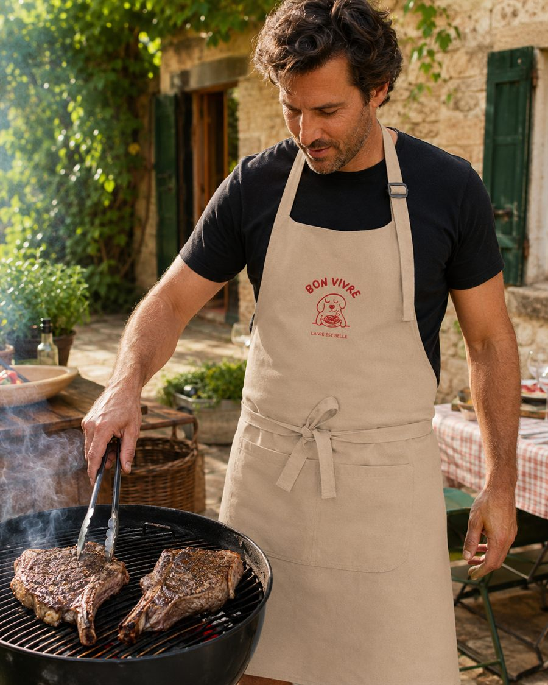
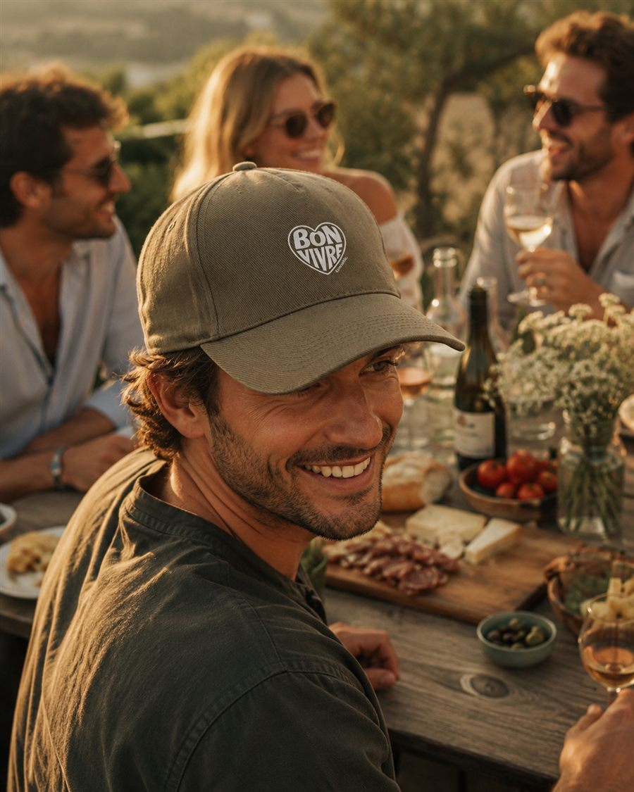
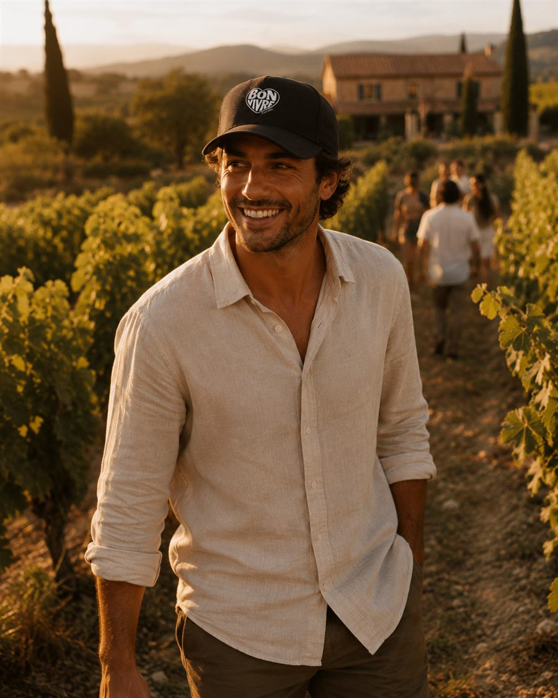

Les Accessoires Bon Vivre
Après les vêtements, place à ce qui accompagne les grandes tablées, les grillades du dimanche et les soirées d'été entre copains dans la vallée du Rhône. Nos premiers accessoires prolongent l'esprit bon vivant jusqu'au bout de la table, autour du barbecue, entre deux verres de vin et de bons éclats de rire. Comme nos vêtements, ils sont pensés pour durer et pour être utiles, sans chichi ni superflu.
Des accessoires pensés comme des vêtements
On a commencé par les t-shirts, les sweats et les vestes, et on aborde les accessoires avec la même philosophie : peu de références, mais choisies avec soin. Le tablier BBQ et la casquette sont les premiers accessoires Bon Vivre originaux de la gamme, et pas de simples à-côtés ajoutés pour la forme. On leur a donné autant d'attention qu'à n'importe quel vêtement de la collection : mêmes matières responsables, même souci du détail, même envie de coller à la vraie vie des barbecues et des apéros entre amis. Retrouvez-les dès maintenant sur la Bon Vivre boutique en ligne, aux côtés du reste de la collection. Une belle façon de commencer une gamme d'accessoires qui, on l'espère, s'agrandira avec le temps.

Tablier BBQ
30 €
« Respect de la cuisson, amour du bon goût ! » Confectionné en 100 % coton biologique, avec une boucle de réglage en plastique recyclé au niveau du cou et une grande poche avant à deux compartiments (36 x 20 cm) pour glisser pinces, thermomètre et autres indispensables du grillardin. Disponible en Noir et Beige, taille unique.


Casquette
25 €
« La casquette officielle des bons moments. » En 60 % coton recyclé et 40 % polyester recyclé, avec boucle métallique au dos, taille unique. Disponible en Noir et Kaki.
Bientôt disponible
La gamme d'accessoires ne fait que commencer, et on préfère avancer pas à pas plutôt que de promettre trop vite. D'autres objets utiles et bon vivants pourraient bien rejoindre ce tablier dans les mois qui viennent, toujours dans le même esprit : simple, solide, et pensé pour la vraie vie entre la Drôme et l'Ardèche. Si vous voulez être parmi les premiers informés dès qu'il y a du nouveau, écrivez-nous et on vous tient au courant avec plaisir, sans promesse de date précise.
En attendant l'arrivée des prochains accessoires, direction nos t-shirts ou nos sweats et vestes pour compléter la tenue avant le prochain barbecue entre copains, verre de la vallée du Rhône à la main.